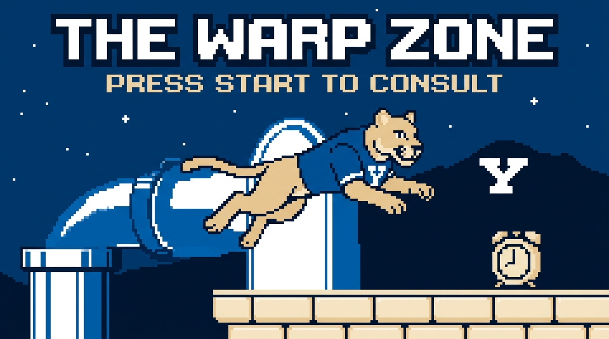
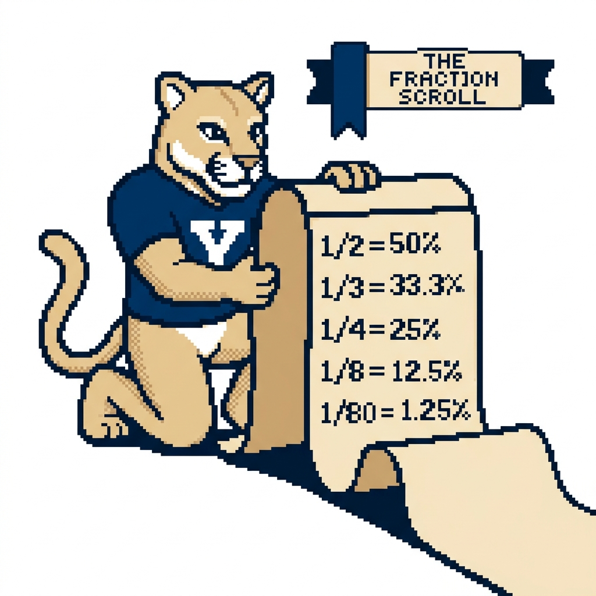
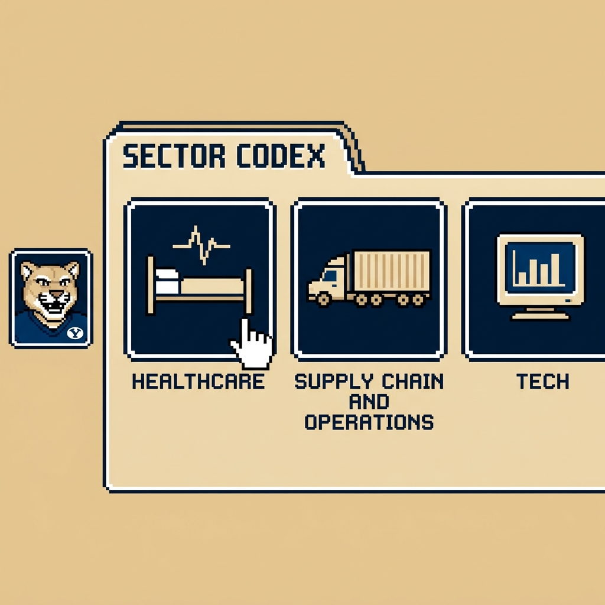

Book 1 · 3 pages
The Warp Zone
Press Start to Consult: the night-before cheat sheet.

#HUD Check
- Opening Cutscene and Save Point (about 1 minute). Take notes, then recap out loud: client, goal, numbers confirmed. Over video, 60 and 16 sound alike.
- Dialogue Tree (2 to 3 minutes). Ask three to five questions: business model, scope, target metric, gaps in your notes. Put a dodged question in your map.
- Pause Menu, then Quest Map (2 minutes head down, about 3 to deliver). Ask for two minutes each time. The coaches said any trained Player 2 expects it. Draw four regions with three quantified quests each, then renumber them by priority.
- The variable middle. Expect Number Cruncher rounds (about 2 minutes to structure, 3 to solve and share) and Idea Hydra rounds (3 to 4 minutes), in any number and any order.
- Final Boss: The Chairlift (about 1 minute). Ask for 30 seconds, then deliver a one-sentence recap, the recommendation before its support, the least-supported assumption, and next steps.
#Spellbook
- Add: line up the zeros, add from the left, say each subtotal out loud.
- Subtract: round the number you are taking away up to a clean figure, subtract, then add back what you over-subtracted: 500 minus 198 is 500 minus 200, plus 2, so 302.
- Multiply: strip the zeros, multiply the small numbers, put the zeros back: 400K units times $150 is 4 times 15, then six zeros, $60M.
- Divide: factor the divisor: 84K divided by 6 is half of 84K, then a third, about 14K.
- Big numbers: carry the unit (K, M, B, T). Thousands times thousands make millions.
- Percents: find 10% by moving the decimal, then scale: 15% is 10% plus half of it.

The Fraction Scroll
| Fraction | Percent |
|---|---|
| 1/2 | 50% |
| 1/3 | 33.3% |
| 1/4 | 25% |
| 1/5 | 20% |
| 1/6 | 16.7% |
| 1/7 | 14.3% |
| 1/8 | 12.5% |
| 1/9 | 11.1% |
| 1/10 | 10% |
| 1/11 | 9.1% |
| 1/12 | 8.3% |
| 1/15 | 6.7% |
| 1/20 | 5% |
| 1/25 | 4% |
| 1/30 | 3.3% |
| 1/40 | 2.5% |
| 1/50 | 2% |
| 1/80 | 1.25% |
| 1/100 | 1% |
The 1/80 trick. Give an 80-year lifespan an even spread and each year of age holds 1.25% of the population. People 65 and over span 15 years: 15 times 1.25% is about 19%. K-12 spans 13 grades: 13 times 1.25% is about 16%. The Atlas figures run lower (60M and 50M), so use the trick for a first pass and the Atlas for the final number.
Three rounding tricks.
- Round inputs to clean divisors and say so: Germany's 84M becomes 80M, and 3.5M Utahns at 3.0 per home become 1.2M households.
- Round one factor up and the other down so the errors offset: 48 times 21 becomes 50 times 20, or 1,000 (true: 1,008).
- Round last and name the direction: 16.8K units times $2,000 is $33.6M, so say "about $34M, rounded up" and keep $33.6M on the page.
#Overworld Atlas
Carry these in your head: US population, your city, the interview city, two countries or a continent, and your target firm's sector headline. Ask Player 2 for the rest.
World and US
| Figure | Value |
|---|---|
| World population | 8.2B |
| World GDP | $120T |
| US population | 340M |
| US households | 130M |
| US average household size | 2.5 |
| US adults 18+ | 260M |
| US 65+ | 60M |
| US K-12 students | 50M |
| US GDP | $30T |
Utah
| Figure | Value |
|---|---|
| Utah population | 3.5M |
| Utah households | 1.2M |
| Utah average household size | 3.0 |
| Wasatch Front population | 2.7M |
| Salt Lake County | 1.2M |
| Utah County | 720K |
| Provo-Orem metro | 780K |
| BYU total enrollment | 34K |
Ten biggest US metros
| Metro | Population | Metro | Population |
|---|---|---|---|
| New York metro | 20M | San Francisco Bay Area | 7.5M |
| Los Angeles metro | 13M | Washington DC metro | 6.3M |
| Chicago metro | 9.5M | Atlanta metro | 6.3M |
| Dallas-Fort Worth metro | 8M | Miami metro | 6.2M |
| Houston metro | 7.5M | Philadelphia metro | 6.2M |
Twelve countries
| Country | Population | Country | Population |
|---|---|---|---|
| India | 1.44B | Japan | 124M |
| China | 1.41B | Germany | 84M |
| United States | 340M | United Kingdom | 68M |
| Indonesia | 280M | France | 68M |
| Brazil | 215M | Canada | 40M |
| Mexico | 130M | Australia | 28M |
Regions
| Region | Population |
|---|---|
| Asia | 4.8B |
| Africa | 1.5B |
| Europe | 745M |
| European Union | 450M |
| North America (US, Canada, Mexico) | 510M |
#Sector Codex

Load the page that matches your firm. A healthcare firm expects you to know Medicare enrollees cold.
Healthcare
| Metric | Figure |
|---|---|
| US healthcare spending | $5.3T |
| Healthcare share of US GDP | 18% |
| Spending per person | $15.5K |
| US hospitals | 6,100 |
| Medicare enrollees | 68M |
| Medicaid and CHIP enrollees | 72M |
| Employer insurance covered lives | 155M |
| Hospital operating margin | 1% to 4% |
Supply Chain and Operations
| Metric | Figure |
|---|---|
| Logistics cost share of US GDP | 9% |
| Trucking share of freight tonnage | 72% |
| Truckload capacity (weight) | 45,000 lb |
| Truckload capacity (pallets) | 26 pallets |
| Truckload rate per mile | $2.50 |
| Ocean transit, Shanghai to LA | 14 to 21 days |
| Last-mile share of total delivery cost | 40% to 50% |
| Inventory carrying cost | 20% to 30% |
| Fill rate target | 95% to 98% |
| OEE world class | 85% |
Tech
| Metric | Figure |
|---|---|
| Software gross margin | 70% to 85% |
| LTV to CAC benchmark | 3x |
| CAC payback benchmark | under 18 months |
| Net revenue retention (good) | 100% to 120% |
| Annual gross churn, healthy SaaS | 5% to 10% |
| Rule of 40 | growth % + profit margin % >= 40 |
| Marketplace take rate | 10% to 30% |
| E-commerce share of US retail | 16% |
#Quest Map in 60 Seconds
Build the four regions from this prompt, quantify each quest, and attach a "so that." Use your Compass, the hypothesis, to pick the region you start in.
- Profitability: Revenue (price, volume, mix), Cost (fixed, variable). Split each into external causes (demand, competitor moves) and internal causes (capacity, recent changes) with no overlap. Add what you suspect, such as a rival's price cut.
- Market entry: Market attractiveness (size, growth, share concentration), Customer (segments, willingness to pay, channel), Entry economics (price, margin, investment, payback), Capabilities and entry mode (build, partner, buy).
- Growth: Market, Product, Customer, Company. Or run the product-market matrix, current or new product by current or new market, and size each cell.
- M&A: Standalone value of the target, Synergies (revenue and cost, each sized), Deal economics (price against value, payback), Risks (culture, regulators, key people). Close with a binary answer: buy or pass.
- Pricing: Cost floor (unit economics), Customer ceiling (willingness to pay, elasticity), Competitor reference prices, Strategy and channel (skim or penetrate, dealer margin).
- Operations: Map the process, find the bottleneck, then Cost per unit, Capacity and utilization, Quality and waste, Speed (cycle time, on-time-in-full delivery).
- The Sizing Dungeon, five floors: (1) population, households, or businesses, (2) three or four segments, (3) percent who own or buy, (4) purchase frequency, under one per year for durables, (5) average price. True up 10% to 20% for fleets, rentals, and businesses. Market size means revenue per year unless Player 2 says otherwise. Utah e-bikes, all brands (the Wasatch Wheels case): 1.2M households, 72K on the Wasatch Front plus 12K rural for 84K, 14K a year, 16.8K with fleets, $33.6M.
#Boss Checklists
Boss Fight I: The Number Cruncher
- Recap the data, confirm each number, and name the unit: units or dollars.
- Write the equation in words before any number and get Player 2's nod.
- Solve out loud, one step at a time, and sense-check each result.
- Give the three-part answer: the number, the Loot (what it means and what the client should do), and what is next.
Boss Fight II: The Idea Hydra
- Recap the narrower question in 30 seconds, then ask for 30 to 60 seconds of prep.
- Name three necks that do not overlap (about 1 minute).
- Hang two to four heads on each neck.
- Say where you would start and what else (30 seconds).
Final Boss: The Chairlift
- Recap why the client called and what you found across the whole case.
- Recommend: a binary answer to a binary question, the support, and the least-supported assumption.
- Name three next steps, deeper or wider, starting with the one that firms up that assumption.
Five Game Over screens
- You counted the installed base, a stock, instead of annual sales, a flow.
- You assumed 100% ownership, or any figure you cannot defend when Player 2 asks "why 60%?"
- You did the math in silence, or before the nod.
- You skipped the Pause Menu, or rambled past three minutes on the Quest Map.
- You handed over a number with no Loot, or called your dodged question dumb.
Each screen ends with Continue?, and the answer is one more live case out loud.